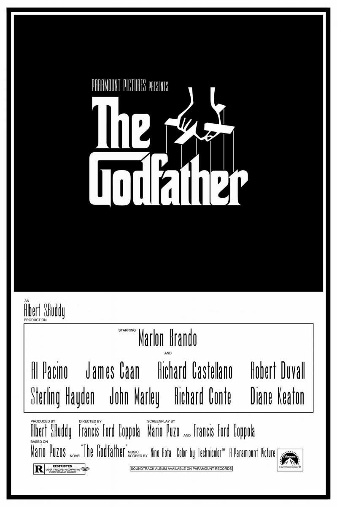

Un joven hastiado de su gris y monótona vida lucha contra el insomnio. En un viaje en avión conoce a un carismático vendedor de jabón que sostiene una teoría muy particular: el perfeccionismo es cosa de gentes débiles; sólo la autodestrucción hace que la vida merezca la pena. Ambos deciden entonces fundar un club secreto de lucha, donde poder descargar sus frustaciones y su ira, que tendrá un éxito arrollador.
Matrix
Thomas Anderson es un brillante programador de una respetable compañía de software. Pero fuera del trabajo es Neo, un hacker que un día recibe una misteriosa visita...

El Padrino
América, años 40. Don Vito Corleone (Marlon Brando) es el respetado y temido jefe de una de las cinco familias de la mafia de Nueva York. Tiene cuatro hijos: Connie (Talia Shire), el impulsivo Sonny (James Caan), el pusilánime Fredo (John Cazale) y Michael (Al Pacino), que no quiere saber nada de los negocios de su padre. Cuando Corleone, en contra de los consejos de 'Il consigliere' Tom Hagen (Robert Duvall), se niega a participar en el negocio de las drogas, el jefe de otra banda ordena su asesinato. Empieza entonces una violenta y cruenta guerra entre las familias mafiosas.
El Señor de los anillos: La comunidad del anillo
En la Tierra Media, el Señor Oscuro Sauron ordenó a los Elfos que forjaran los Grandes Anillos de Poder. Tres para los reyes Elfos, siete para los Señores Enanos, y nueve para los Hombres Mortales. Pero Saurón también forjó, en secreto, el Anillo Único, que tiene el poder de esclavizar toda la Tierra Media. Con la ayuda de sus amigos y de valientes aliados, el joven hobbit Frodo emprende un peligroso viaje con la misión de destruir el Anillo Único. Pero el malvado Sauron ordena la persecución del grupo, compuesto por Frodo y sus leales amigos hobbits, un mago, un hombre, un elfo y un enano. La misión es casi suicida pero necesaria, pues si Sauron con su ejército de orcos lograra recuperar el Anillo, sería el final de la Tierra Media.